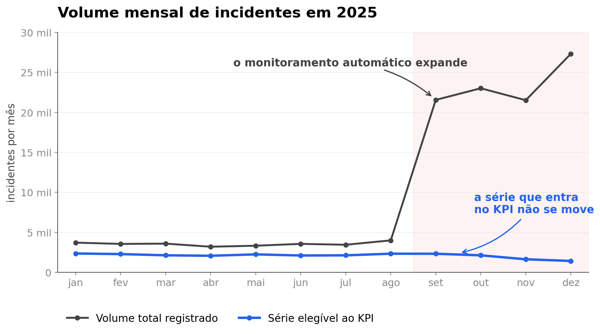
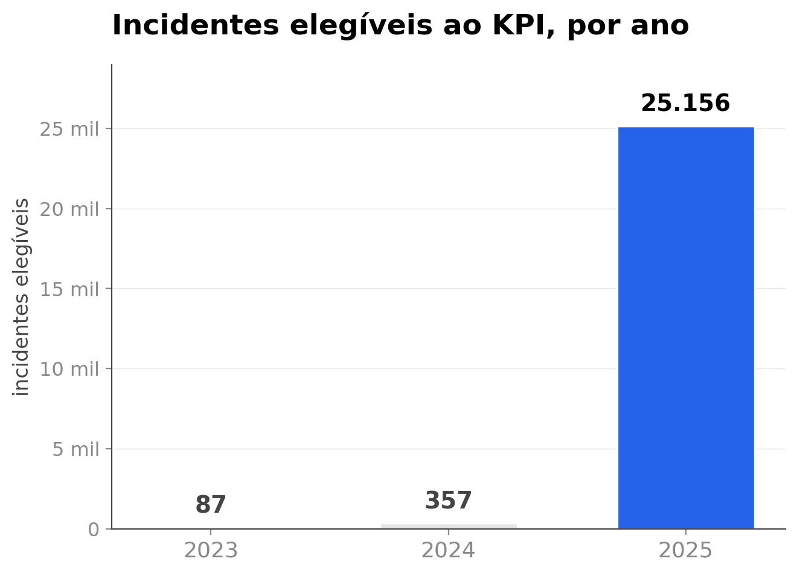
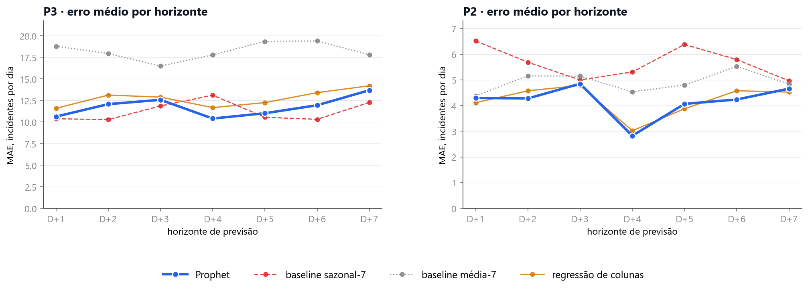
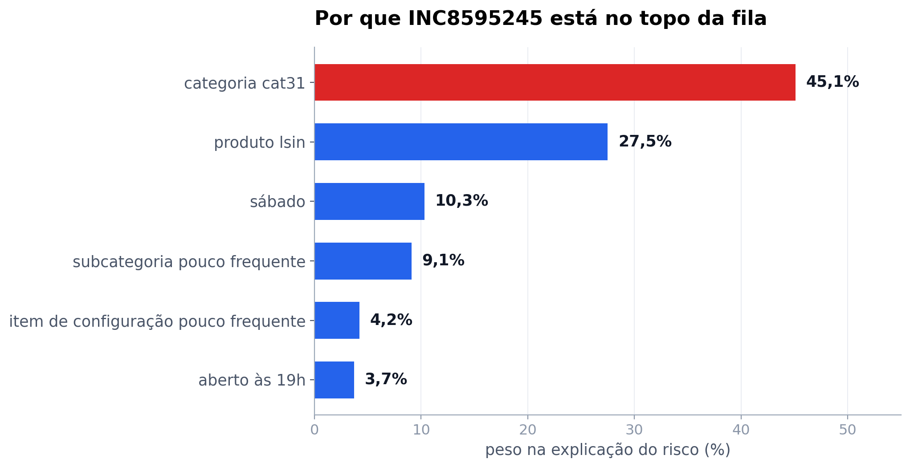

Igor apresentaIgor apresenta
Igor apresentaIgor apresentaLê o histórico operacional da Locaweb e avisa antes de o prazo estourar.
Igor apresentaSuper Data Bros

Costa de Oliveira

Abrantes
Vignola
Igor apresentao deus grego do tempo
Todo incidente tem um prazo correndo. O Cronos existe para ver o prazo antes de ele estourar.
Igor apresentaO prazo de cada incidente
em três anos
Igor apresentaQuantidade de quebras em 2025
violações de 39 permitidas
passou o limite em novembro
Acima do limite do anoviolações de 263 permitidas
fechou o ano a 67 do limite
Dentro do limite do anoIgor apresentaA fila não atende na ordem em que o prazo estoura
Quem atende começa pela prioridade mais alta. Quem estoura o prazo é a outra.
Igor apresentaAnálise Exploratória
Antes de prever, entender o terreno. O histórico operacional da Locaweb lido campo a campo, para separar o que é sinal do que é ruído.
Igor apresenta
Seção 01 · Análise exploratória
Nas próximas páginas: o salto de setembro · o recorte de treino · quem abre e quando · o alvo raro
Análise Exploratória dos Dados
Antes de prever, entender o terreno. O histórico operacional da Locaweb lido campo a campo, para separar o que é sinal do que é ruído.
Igor apresentaBase elegível ao indicador: 25.600 incidentes · 248 violações de OLA · 2023 a 2025O salto de setembro

de agosto para setembro: de 3.996 para 21.561 incidentes no mês.
no mesmo par de meses: de 2.330 para 2.324. Praticamente o mesmo número.
Ana apresentaPor que treinamos só em 2025

O modelo leria essa subida como tendência de alta, quando ela reflete a adoção do registro no KPI.
Treinar apenas em 2025, com sazonalidade anual desligada.
Ana apresentaQuem abre, e quando
Vale nas duas prioridades: 3,0× na 2 e 3,1× na 3.
Na prioridade 2 não há diferença: 0,75% contra 0,83%.
Ana apresentaO alvo é raro
É a variável que o modelo de risco prevê, incidente a incidente. Uma a cada 103 passa do prazo.
400 quadrados para os 25.600 elegíveis, cada um valendo 64 incidentes. Em vermelho, a fração equivalente às 248 violações.
Ana apresentaCausas e explicabilidade
Quais causas geram os incidentes, quais problemas se repetem, e o que diferencia o incidente que estoura o prazo do que é resolvido em tempo.
Ana apresenta
Seção 02 · Causas e explicabilidade
Nas próximas páginas: o mesmo ativo quebra de novo · o código Outro · volume contra taxa por causa
Causas e o que repete
Quais causas geram os incidentes, quais problemas se repetem, e o que diferencia o incidente que estoura o prazo do que é resolvido em tempo.
Ana apresentaDuas exigências do desafio nesta seção · agrupar causas recorrentes e identificar padrões de incidentes críticosO mesmo ativo quebra de novo
quebras do segundo semestre foram em ativo que já tinha quebrado
As 53 caíram em 14 ativos, de 4.633 na base. Em metade das quebras do segundo semestre, o próprio histórico já dizia onde olhar.
Ana apresentaParticipação do código de fechamento Outro no volume e nas violações
Jan a set de 2025, base elegível ao KPI.
taxa de violação dentro do código Outro
contra 0,94% na média da base
Ana apresentaA causa mais frequente não é a que mais estoura
na sua escala
Ana apresentaVolume e taxa de quebra de OLA por causa de fechamento
 Ana apresenta
Ana apresentaPrevisão de Volume
Quantos incidentes chegam por dia, hoje e na próxima semana. É o número que dimensiona a equipe antes de o dia começar.
Ana apresenta
Seção 03 · Previsão de volume
Nas próximas páginas: os próximos sete dias · o erro contra os baselines
Previsão de Volume
Quantos incidentes chegam por dia, hoje e na próxima semana. É o número que dimensiona a equipe antes de o dia começar.
Ana apresentaTreino em 2025 · sazonalidade semanal ligada, anual desligada · feriado nacional como variávelOs próximos sete dias
dentro da faixa
 Ana apresenta
Ana apresentaComparação do erro do Prophet com os baselines, por horizonte
Cada curva é o erro médio de um método em cada horizonte, no mesmo protocolo de reajuste.

Ana apresentaRisco de estouro de OLA
Qual incidente vai estourar o prazo. O modelo pontua cada um no instante da abertura e devolve a fila em ordem de risco, com o motivo de cada posição.
Ana apresenta
Seção 04 · Risco de OLA
Nas próximas páginas: a fila de risco e o desempenho do modelo · explicabilidade
Risco de estouro de OLA
Qual incidente vai estourar o prazo. O modelo pontua cada um no instante da abertura e devolve a fila em ordem de risco, com o motivo de cada posição.
Ana apresentaRegressão logística do scikit-learn 1.6.1 · avaliação fora do período de treino · 5.183 incidentes, 50 violaçõesQuebras encontradas por tamanho da fila percorrida
 Ana apresenta
Ana apresentaOrdenar igual, contar diferente
Os dois separam quem quebra de quem não quebra com a mesma qualidade. Só um acerta quantos, e a projeção da meta soma quebras previstas.
Ana apresentaDecomposição da pontuação de risco por característica

Dos 63 incidentes deste ativo no período, 21 estouraram o prazo.
As seis parcelas somam a nota. Nada fica de fora da tela, e a mesma decomposição existe para cada um dos 5.183 incidentes da fila.
Ana apresentaMorning Brief
O resumo que abre sozinho às sete da manhã, com o fechamento de ontem e a previsão de hoje nas duas prioridades. Ninguém precisa perguntar.
violações de OLA por dia útil, de 17/09 a 30/09, nas duas prioridades juntas
a faixa de 80% do Prophet, nas duas prioridades, na mesma escala de 0 a 100 incidentes no dia
Hygor apresenta
Seção 05 · Morning Brief
Na próxima página: o Morning Brief como aparece no sistema
Morning Brief
O resumo que abre sozinho às sete da manhã, com o fechamento de ontem e a previsão de hoje nas duas prioridades. Ninguém precisa perguntar.
violações de OLA por dia útil, de 17/09 a 30/09, nas duas prioridades juntas
a faixa de 80% do Prophet, nas duas prioridades, na mesma escala de 0 a 100 incidentes no dia
Hygor apresentaO primeiro dos dois diferenciais entregues; a nota de saúde por produto vem na seção seguinteMorning Brief
 Hygor apresenta
Hygor apresentaProjeção da meta e saúde
Os dois modelos se combinam para responder se o ano fecha dentro da meta, e cada produto recebe uma nota que sintetiza a sua condição operacional.
Hygor apresenta
Seção 06 · Os modelos juntos
Nas próximas páginas: a meta do ano vai fechar? · a nota de saúde por produto
Projeção da meta e saúde
Os dois modelos se combinam para responder se o ano fecha dentro da meta, e cada produto recebe uma nota que sintetiza a sua condição operacional.
Hygor apresentaCinco datas de corte · erro máximo de 15,0% · nenhuma projeção errou para o lado otimistaA meta do ano vai fechar?
Hygor apresentaA meta do ano vai fechar?
Hygor apresentaA meta do ano vai fechar?
O que já aconteceu no ano, até o corte de 30 de setembro.
Onde o ano termina, segundo a projeção, com a faixa de incerteza.
O limite do ano: quantas violações a operação pode ter na prioridade.
O veredito: se a faixa passa do limite, a meta está em risco.
Hygor apresentaA meta do ano vai fechar?
Quantas violações de OLA a operação pode ter no ano
Uma por prioridade, definida pela Locaweb. Passou do número, o indicador do ano fecha abaixo do combinado.
O trilho ao lado é o mesmo componente da tela de Projeção do sistema.
Hygor apresentaQue produto está pior, e por quê
A nota é relativa ao conjunto, e abrir um produto mostra os cinco componentes que a produzem.
(1,000 + 0,533 + 1,000 + 0,400 + 1,000) ÷ 5 = 0,787 · 100 × (1 − 0,787) = 21,3
Hygor apresentaJanela de 01/01/2025 a 30/09/2025 · produtos com 200 ou mais incidentes elegíveis ao indicadorArquitetura da solução
Com o quê a solução foi feita e como ela roda. Os notebooks treinam e gravam; o contêiner apenas lê, e sobe onde houver Docker.
Hygor apresenta
Seção 07 · Arquitetura
Nas próximas páginas: como o Cronos antecipa o resultado · como isso roda · a demonstração ao vivo
Arquitetura da solução
Com o quê a solução foi feita e como ela roda. Os notebooks treinam e gravam; o contêiner apenas lê, e sobe onde houver Docker.
Hygor apresentaDjango 6.1 · Plotly 6.0 · imagem python:3.13-slim · nenhum modelo treina dentro do contêinerComo o Cronos antecipa o resultado do ano
Dois modelos e dois cálculos leem o histórico e a fila aberta, e devolvem a quem opera a situação da meta antes da apuração.
erro médio por dia de D+1 a D+7, na prioridade 2 e na 3
das quebras caem nos 20% de maior risco da fila: 38 de 50
de antecedência na chamada, certa nas duas prioridades
produtos acompanhados, 94% do volume elegível de 2025
Sobe lendo os 350 kB gravados pelos notebooks. Nenhum modelo treina aqui dentro.
Hygor apresentaComo isso roda
 uma imagem Docker
uma imagem Docker


Feito para a infraestrutura da Locaweb, que é uma nuvem. Não amarramos a solução a serviço proprietário de terceiro: o que ela precisa é de Docker, e isso a casa já tem.
350 kB de artefato gravado pelos notebooks, em três arquivos. Nenhum modelo treina aqui dentro.
docker run -p 8000:8000 cronos
Hygor apresentaDa planilha ao painel do gestor
Os notebooks treinam e gravam. O contêiner apenas lê, e roda em qualquer infraestrutura.
122.543 incidentes, 19 colunas
feriado nacional, país BR — o dataset não traz
A regra Entrou para KPI? reduz a base a 25.600. Monta dia da semana e feriado.
volume diário de D+1 a D+7, em P2 e P3
regressão logística do risco por incidente
os gráficos do painel, renderizados no navegador
a imagem sobe onde houver Docker e lê 350 kB de artefato. Nenhum modelo treina aqui dentro.
abre o painel e recebe o resumo das 07h sem pedir
Hygor apresentaAplicação web Cronos
As seis telas que a operação abre no dia, com o relógio parado em 1º de outubro de 2025, às 15h.
 Hygor apresenta
Hygor apresentaAplicação web Cronos
Daqui em diante é a ferramenta rodando. Tudo o que ela mostra existia às 15h de 1º de outubro de 2025.


 Hygor apresenta
Hygor apresentaAgora é a ferramenta
Saímos do slide. O que vem a seguir é o Cronos rodando, com dado real da Locaweb e nada preparado para esta apresentação.
Hygor apresentaObrigado.
Por confiar no Cronos, abrir a operação real e apontar o que valia a pena testar.
Igor apresentaObrigado.
Por confiar no Cronos, compartilhar a operação real e torcer junto até aqui.
Igor apresentaAbra o Cronos
A aplicação continua no ar durante as perguntas, com os mesmos dados da demonstração.
Digite o endereço no navegador. Abre direto no painel operacional, sem cadastro.
Igor apresenta72 páginas publicadas · base elegível ao indicador: 25.600 incidentes · relógio parado em 01/10/2025, às 15h